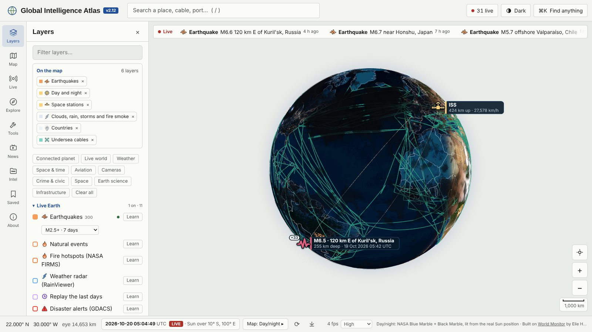

Version 2.12 · free, no account, no server
The world right now, counted
A live 3D Earth you can spin, zoom and click. Earthquakes, storms, fires, flights, satellites and the cables under the sea, each one explained: what it shows, how it is measured and where the numbers come from.
Fires, storms and volcanoes come from the National Aeronautics and Space Administration (NASA) Earth Observatory Natural Event Tracker (EONET). Pick a row to see where they are.
What is on the globe
World Monitor’s curated infrastructure and geopolitics layers, joined by live public feeds and teaching layers. Every layer has a Learn card that explains what you are seeing and how it is measured.
Ways in
Every link below opens the globe already set up for that idea.

Weather you can see
Real clouds from today’s forecast, rain and snow falling where it is falling, lightning in thunderstorms and the glow and smoke of large fires.
OpenEvery flight in the sky
Tens of thousands of live aircraft on their real headings. Click one for its route, height, speed and a photo of the plane.
OpenTrace how a place is connected
Click a spot and watch its links draw: internet exchanges, the cable landing, power stations, the airport and every satellite overhead.
OpenTime machine
Run the planet at up to six hours a second or wind it back a week. Satellites move and earthquakes replay in order.
OpenLive public cameras
Road cameras from transport agencies in California, New York City, London and Hong Kong, with live video where the agency streams it.
OpenNews on the map
Places in the news in the last day with their headlines, and free live news channels from around the world.
OpenGuided tours
The Ring of Fire, the arteries of the internet, chokepoints of trade, orbits, seasons and the supply chain of AI.
OpenWhere on Earth?
Eight places, one click each. Closer guesses score more.
PlayFluid lab
Stir a real-time fluid simulation and meet the maths behind winds, currents and hurricanes.
Open
Standing on generous shoulders
Global Intelligence Atlas grew out of World Monitor by Elie Habib, and borrows ideas, code and data from many open projects. The credits page says exactly what came from where.
- World Monitor
- globe.gl
- three.js
- satellite.js
- USGS earthquakes
- NASA EONET
- NASA GIBS
- NASA FIRMS
- NOAA SWPC
- CelesTrak
- Open-Meteo
- OpenStreetMap
- Esri World Imagery
- adsb.lol
- OpenSky Network
- Caltrans CCTV
- NYC DOT cameras
- TfL JamCams
- Hong Kong TD
- OurAirports
- Panoramax
- hls.js
- PB2002 plates
- WebGL Fluid Simulation
- Remotion
- Tauri